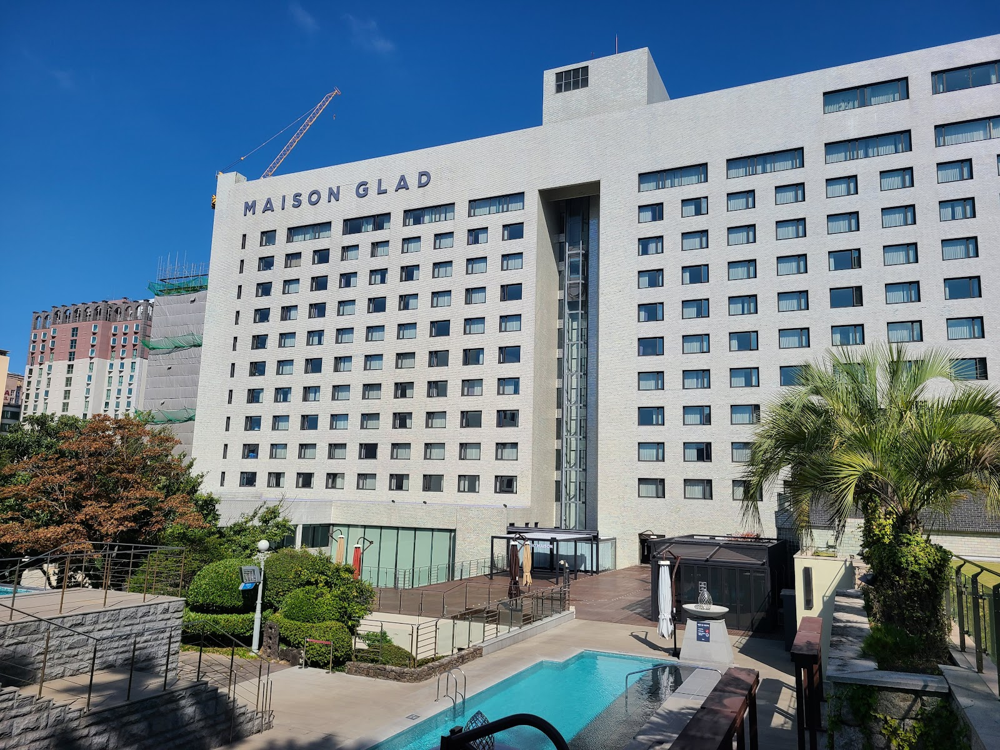

Maison GLAD Jeju: A Convenient City Base for Exploring Jeju
At a glance: Maison GLAD Jeju is a full-service hotel in Yeondong, a lively district in central Jeju City. Its urban location, on-site dining and leisure facilities, and access to everyday conveniences make it a practical option for travelers who want a city base rather than a secluded resort. Google’s current listing shows a rating of 4.2 out of 5 from 4,172 reviews.
Address: 80 Noyeon-ro, Jeju-si, Jeju-do, South Korea.
A city stay with Jeju within reach
Maison GLAD Jeju is in Yeondong, one of Jeju City’s central neighborhoods. That setting is its defining advantage: you can stay close to the city’s restaurants, cafés, shops, and other everyday services, while using Jeju City as a starting point for a wider island itinerary. Recent local search results also describe dining and shopping options in the surrounding area, though the exact businesses and their hours can change.
This is not the kind of stay to choose for a quiet beachfront atmosphere or a remote countryside retreat. Instead, it suits travelers who value a substantial hotel in an urban setting—especially if they want a comfortable place to return to after sightseeing, or prefer to have food and leisure facilities available without planning every detail around a small guesthouse.
Jeju’s attractions are spread across the island, so a central city address is not the same as being close to every destination. Before booking, map out the places you most want to visit and check how you will get between them. If your itinerary focuses on several distant areas, compare driving or public-transport plans as well as hotel locations.
What to expect at the hotel
Available search information describes the hotel as having a range of on-site facilities, including dining, a bakery, a convenience store, a swimming pool, and wellness amenities. These can be helpful extras for families, travelers arriving late, or anyone who wants options close at hand. Facilities, access rules, and operating schedules can change, so check the hotel’s official website directly before relying on a particular service.
The hotel’s scale and range of amenities may appeal to guests who want more than a room alone. Families can look into the pool and other family-oriented facilities; couples or solo travelers may appreciate having food and services on site. Still, don’t assume every facility is included in your room rate or available during your dates. Confirm details such as access, age restrictions, extra charges, and seasonal operation with the hotel.
For meals, the on-site options can offer convenience, but Yeondong’s neighborhood dining scene is another reason to stay here. If you have dietary requirements, contact restaurants or the hotel in advance rather than assuming a particular menu or language support. Keeping a written note of dietary needs in Korean can also be useful when ordering elsewhere on the island.
Who is Maison GLAD Jeju best for?
- First-time visitors: A city hotel can make a straightforward base while you get oriented and plan day trips.
- Families: The listed leisure and food facilities may simplify downtime, but check current access and age policies before booking.
- Travelers who like urban convenience: Yeondong puts everyday services and places to eat close by, rather than offering an isolated resort setting.
- Guests comparing value: Compare the total cost for your dates and the facilities you expect to use. Rates and inclusions vary, so confirm them for your booking.
It may be less suitable if your priority is waking up beside the sea, staying in a quiet rural landscape, or spending most of your trip in a part of Jeju far from the city. In those cases, consider whether another area better matches your itinerary before choosing a hotel.
Good to know
- Verify the address in your map app: Search for “Maison GLAD Jeju” or use the Google Maps link below. The hotel’s address is 80 Noyeon-ro, Jeju-si, Jeju-do.
- Plan island travel separately: Jeju is a large island, and attractions are not all clustered around Jeju City. Check routes and journey times for your own destinations before finalizing your stay.
- Confirm facilities directly: Pool, wellness, dining, and other services may have changing schedules, rules, or fees. The official website is the best place to check current information.
- Read reviews with your needs in mind: Google’s listing currently displays 4.2/5 from 4,172 reviews. Look for recent comments that relate to your priorities—such as room comfort, family stays, or service—rather than relying on the overall score alone.
- Check booking details carefully: Confirm the room type, cancellation terms, included meals, and any facility access before paying. These can differ by rate and reservation channel.
Is Maison GLAD Jeju a good choice?
Maison GLAD Jeju is worth considering if you want a well-equipped hotel in central Jeju City and expect to use the surrounding neighborhood as part of your trip. Its strongest practical appeal is the combination of a Yeondong location and a broad set of reported on-site facilities. The key trade-off is that a city base is not a substitute for choosing accommodation near a specific coast or attraction. Match the location to your itinerary, then confirm current hotel services and booking terms before you commit.
FAQ
Where is Maison GLAD Jeju?
It is at 80 Noyeon-ro in Yeondong, Jeju City, Jeju-do, South Korea. Use the hotel name or the Google Maps link below to navigate.
Does the hotel have facilities for families?
Recent local search information mentions a swimming pool and family-oriented facilities. Check with the hotel for current availability, age rules, schedules, and any additional charges.
Is Maison GLAD Jeju a good base for exploring the whole island?
It can work as a city base, but Jeju’s attractions are spread out. Compare your planned destinations and transport options before deciding whether Jeju City is the best location for your trip.